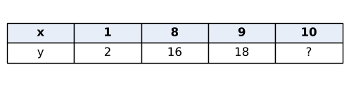

| Session | Questions | Tools | Points |
|---|---|---|---|
| 1 · The Number System; Expressions and Equations | 20 (1–20): 12 multiple choice, 3 select all, 4 short answer, 1 constructed response | No calculator; reference sheet | 23 |
| 2 · Ratios and Proportional Relationships; Geometry; Statistics and Probability | 20 (21–40): 12 multiple choice, 3 select all, 4 short answer, 1 constructed response | Calculator; reference sheet | 23 |
| # | Key | Domain | Skill | Standards |
|---|---|---|---|---|
| 1 | (B) w = 2 5/8 | Expressions and Equations | Solving Equations by Adding or Subtracting Fractions | 7.EE.B.4a, 7.NS.A.1, 7.NS.A.3 |
| 2 | (A) g = 3.7 | Expressions and Equations | Solving Equations by Multiplying or Dividing Decimals | 7.EE.B.4, 6.EE.B.7 |
| 3 | (B) 10 | Expressions and Equations | Solving One-Step Inequalities by Multiplying or Dividing | 7.EE.B.4b |
| 4 | (D) n = -2 | The Number System | Multiplying and Dividing Integers | 7.NS.A.2a, 7.NS.A.2b |
| 5 | (C) x = 13 | Expressions and Equations | Solving Multi-Step Equations | 7.EE.B.4a, 8.EE.C.7b |
| 6 | (D) 11m + 10 | Expressions and Equations | Simplifying Variable Expressions | 7.EE.A.1, 6.EE.A.4 |
| 7 | (A) 23 | The Number System | Subtracting Integers | 7.NS.A.1c |
| 8 | (A) p = 96 | Expressions and Equations | Solving Equations by Multiplying Fractions | 7.EE.B.4a, 7.NS.A.2, 7.NS.A.3 |
| 9 | (B) 2(x + 3) | Expressions and Equations | Rewriting Expressions in Context | 7.EE.A.2 |
| 10 | (B) 6 | Expressions and Equations | Solving Two-Step Equations | 7.EE.B.4a |
| 11 | (D) -1/2, 1/2, 0.6, 4/5 | The Number System | Comparing and Ordering Rational Numbers | 7.NS.A.2d, 6.NS.C.7a |
| 12 | (B) 3/25 | The Number System | Fractions and Decimals | 7.NS.A.2d |
| 13 | Solve: x - 13.44 = -29.93 → x = -16.49; Solve: p + 16.83 = 10.88 → p = -5.95; Solve: a + 14.28 = 16.49 → a = 2.21 | Expressions and Equations | Solving Equations by Adding or Subtracting Decimals | 7.EE.B.4, 6.EE.B.7 |
| 14 | Find the sum: 10 + (-25) + 28 + 8 → 21; Find the sum: 8 + 13 + (-4) + 22 → 39; Find the sum: 5 + (-7) + 16 + 30 → 44 | The Number System | Adding Integers | 7.NS.A.1b, 7.NS.A.1d |
| 15 | Solve: (2/3)n + 9/2 = -27/2 → n = -27; Solve: (1/6)n + 9/2 = 7/2 → n = -6; Solve: (3/4)y + 5/2 = -7/2 → y = -8 | Expressions and Equations | Multi-Step Equations with Fractions and Decimals | 7.EE.B.4a, 7.EE.B.3 |
| 16 | -83/200 | The Number System | Rational Numbers | 7.NS.A.2d, 6.NS.C.6 |
| 17 | 111 | Expressions and Equations | Using Formulas | 7.EE.B.4, 6.EE.A.2c |
| 18 | 21 | Expressions and Equations | Write an Equation | 7.EE.B.4, 7.EE.B.4a |
| 19 | 50 | Expressions and Equations | Estimating Decimal Products and Quotients | 7.EE.B.3, 6.NS.B.3 |
| 20 | 4-point constructed response | The Number System | Temperature changes | |
| 21 | (D) 3/8 | Statistics and Probability | Counting Outcomes and Theoretical Probability | 7.SP.C.7a, 7.SP.C.8b |
| 22 | (D) exactly one triangle | Geometry | Constructions | 7.G.A.2 |
| 23 | (D) 20 | Ratios and Proportional Relationships | Tables | 7.RP.A.2a, 7.RP.A.2b |
| 24 | (C) $693.00 | Ratios and Proportional Relationships | Simple and Compound Interest | 7.RP.A.3 |
| 25 | (D) Roll a number cube 3 times, with each number standing for one prize, and repeat many times. | Statistics and Probability | Experimental Probability | 7.SP.C.8c |
| 26 | (D) x = 21 | Geometry | Similar Figures and Scale Drawings | 7.G.A.1 |
| 27 | (C) $35.00 | Ratios and Proportional Relationships | Markup and Discount | 7.RP.A.3 |
| 28 | (D) 120% increase | Ratios and Proportional Relationships | Percent of Change | 7.RP.A.3 |
| 29 | (B) 144° | Geometry | Angle Relationships and Parallel Lines | 7.G.B.5 |
| 30 | (D) 70 parts | Ratios and Proportional Relationships | Write a Proportion | 7.RP.A.2c, 7.RP.A.3 |
| 31 | (C) 54 km | Ratios and Proportional Relationships | Proportions | 7.RP.A.2, 7.RP.A.3 |
| 32 | (A) 1/12 | Statistics and Probability | Independent and Dependent Events | 7.SP.C.8a, S-CP.A.2 |
| 33 | A circle has diameter 28 in. What is its radius? → 14 in.; A circle has diameter 37 in. What is its radius? → 18 1/2 in.; A circle has diameter 27 in. What is its radius? → 13 1/2 in. | Geometry | Circles | 7.G.B.4 |
| 34 | Two angles are complementary. One measures 32°. What is the other? → 58°; Two angles are complementary. One measures 77°. What is the other? → 13°; Two angles are complementary. One measures 53°. What is the other? → 37° | Geometry | Angle Relationships and Parallel Lines | 7.G.B.5 |
| 35 | A 3-digit code uses digits 0–9, and no digit may repeat. How many codes are possible? → 720; A code uses 3 digits (0–9), and digits may repeat. How many codes are possible? → 1,000; A 4-digit code uses digits 0–9, and no digit may repeat. How many codes are possible? → 5,040 | Statistics and Probability | Counting Outcomes and Theoretical Probability | 7.SP.C.7a, 7.SP.C.8b |
| 36 | 30 cm² | Geometry | Space Figures | 7.G.A.3, 7.G.B.6 |
| 37 | 219.8 in² | Geometry | Surface Area of Pyramids, Cones, and Spheres | 7.G.B.6, G-GMD.A.3 |
| 38 | $7.86 | Ratios and Proportional Relationships | Percentages and Equations | 7.RP.A.3, 7.EE.B.3 |
| 39 | 17 | Statistics and Probability | Comparing Two Populations | 7.SP.B.3, 7.SP.B.4 |
| 40 | 4-point constructed response | Geometry | A circular garden |

Mr. K’s Classroom · Grade 7 Practice Test B · Teacher key. Questions 1–19 and 21–39 come from the 7th Grade Math question banks, whose answer keys are recomputed in CI (verify_keys.py).